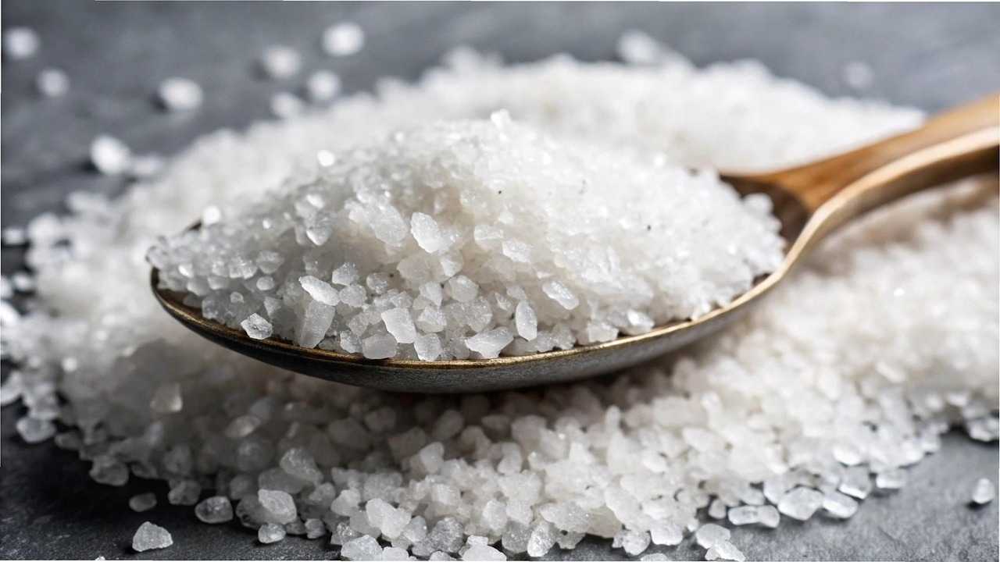

Meersalz bringt oft eine feine, leicht mineralische Note mit und wird gern zum Nachwürzen genutzt – besonders bei einfachen, natürlichen Gerichten. Es wirkt etwas milder und macht sich gut auf Ofengemüse, Brot oder Salaten. Jodsalz schmeckt neutral, löst sich schnell auf und unterstützt die Schilddrüse – ein echtes Plus im Alltag. Wer regelmäßig kocht, greift meist automatisch zum Jodsalz. Geschmackliche Highlights setzt man aber oft mit Meersalz am Schluss.
Schwarzer Pfeffer ist der Klassiker – scharf, aromatisch und vielseitig einsetzbar. Weißer Pfeffer wirkt etwas milder und passt gut zu hellen Soßen oder Fischgerichten. Grüner Pfeffer bringt eine frische Note, während roter eher selten und leicht fruchtig ist. Bunter Pfeffer ist meist eine Mischung und bringt optische Vielfalt. In der Küche lohnt sich je nach Gericht der gezielte Einsatz einzelner Sorten. Frisch gemahlen entfalten Pfefferkörner ihr volles Aroma am besten.

Olivenöl ist fruchtig, intensiv und ideal für Salate, Antipasti oder mediterrane Gerichte. Es sollte nicht zu stark erhitzt werden, da sonst wertvolle Aromen verloren gehen. Rapsöl hingegen ist hitzebeständig, geschmacksneutraler und eignet sich hervorragend zum Braten. Auch aus gesundheitlicher Sicht punktet Rapsöl mit einem günstigen Fettsäureprofil. Wer auf Abwechslung setzt, hat beide Öle griffbereit - je nach Anwendung.